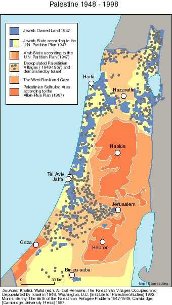

Settlements: The Colonization Policy
Since the signing of the Wye Agreement on 23 October 1998, the Israeli authorities have given the green light to the construction of bypass roads in the West Bank. Their purpose is to link the settlements to each other and impose de-facto Israeli control and presence in order to lay claim to these lands prior to the final status talks This campaign of land grab, settlement expansion and building, and by-pass road construction has been rapidly escalated. On 19 November 1998, the Israeli Government initiated measures to grab a good 10% of land to allow the further construction and expansion of settlements in the West Bank. The Israeli government has stepped up its plans to implement a policy of quiet deportation and ethnic cleansing in what has come to be known, in the case of Jerusalem, as the city's 'judaisation'. Israeli officials have publicly declared that these plans are meant to expropriate the large part of Palestinian land.
 LAND CONFISCATION
Jewish settlement organisations, often supported by the government, have continued with activities against Palestinian property and real estate. These activities are meant to consolidate Jewish presence in the occupied West Bank and East Jerusalem. Since the signing of the Wye Accord, an estimated 27385 dunums have been so far confiscated, of which 15147 have been confiscated in the first three months of the current year 1999, and a further 12238 dunums of land has been expropriated since the signing of the accord to the end of 1998. The expropriated land will be used for amongst other purposes, the construction of by-pass roads, settlement expansion, and construction of industrial zones. According to Law's investigations, Israeli authorities have confiscated 3459 dunums to construct gas station and industrial zones in the Palestinian Kufur Qaddum, Asamou, Jaba', Tal Mariam, Beit Sira, and Athahiriah areas. The land confiscated in the first three months of 1999 (15147 dunums) took place in the following areas: Ramallah (2395 dunums); Hebron (1558 dunums), Bethlehem (580 dunums), Jenin (558 dunums), Salfit & Nablus (3,290 dunums), Tulkarem (200 dunums), Qalqilya (450 dunums), Jerusalem (4019 dunums), Gaza (17 dunums), Rafah (50 dunums) Khan Younis (30 dunums), and Jericho and Northern parts of the Jordan Valley (2000 dunums).
In March 1999, the Israeli authorities confiscated 900 dunums of arable land in Jerusalem, in the Jaba' and Hizma areas. More land expropriation took place the villages of Singil, al-Mugheir, Turmusayya, al-Mazra' Asharqia and Beitin. In Turmuayya, an estimated 10,020 dunums were confiscated for a bypass road, expected to be 5.9 kilometres long and 80 metres wide. About 1,500 olive trees are likely to be uprooted on the village's most fertile arable land. Over the past few weeks, the Israeli authorities have expanded the Mihola settlement north of the Jordan valley with 16 new housing units. Some agricultural land has been added to the area of the settlement for cultivation. This was owned by the Toubas residents but was sealed off in 1967 due to its closeness to the Jordanian border. The Israeli authorities have also completed maintenance and expansion works on bypass road # 80 leading to Jericho and Bisan in the Jordan valley. More work has been underway on 50 dunums of the Biqea' area, originally owned by the residents of Toubas. The Israeli authorities have levelled ground in preparation for a new settlement (Tal Sahyoun) in the village of Kufur Aqab, Jaba' and Mukhmas. 1600 dunums of Kufur Aqab land were confiscated in 1982. A 4 km by 20 m road expected to link the settlement of Beit Eil with Pisgot has almost been completed.
No Palestinian construction will be possible within 150 metres either side of the road with a loss of A total of 12977 dunums of land have been levelled in many other areas of the West Bank of which 12697 dunums have been levelled since the beginning of 1999: 828 dunums in Nablus, 676 in Bethlehem, 6743 in Ramallah, 640 in Hebron, 2180 in Jericho and the northern parts of the Jordan valley, 15 in Jenin, 285 in Salfit, 200 in Tulkarem, 112 in Qalqilya, 768 in Jerusalem, 50 in Rafah, and 200 in Al Mawassi & Khan Younis. Levelling activity reached a peak in February and March 1999, amongst villages affected were Deir Bazi', al-Janieh, Beit Dajan, A'ba, Ein Yabroud, Shofa, Asamou', Athahirieh, Aluban Asharqieh, Halhoul, Ein Qinia, Deir Qiddis, al-Mugheir, Qeizoun, Kufur Qadoum, Deir al-Hattab, Jaloud, Aboud, Aluban al-Gharbia, Bani Naim, Rantiss, Western Rafah and the area of al-Mawassi in the Gaza Strip.
The Israeli authorities have also damaged three newly-constructed roads to cater for Palestinians villages in the Al Walaja, Al Ezaria, and Al Aqaba areas. Work on a fourth road has been ordered to stop. In the al-Walaja area, Israeli municipal officials threatened to disrupt asphalt works on the only road between the village and the main road. The road falls under the jurisdiction of the Jerusalem Municipality, but has not had substantial repairs undertaken for many years. The road project was carried out by the Palestinian PECDAR. And was intended to ensure safe flow of traffic on this busy road. On 15 March 1999, officials from the municipality visited the area and hung notices in Arabic informing the residents that the roadwork had been carried out without licence by the competent Israeli parties. According to the notice, the 450-metre road would be destroyed if village residents did not appeal to the Israeli High Court within 24 hours. The road is also the residents' only route to the Palestinian town of Beit Jala. Israeli authorities earlier tried to annex the Walaja area and include it under their jurisdiction, but it seems that evacuation of the area was necessary first. The authorities have also disrupted work on a Palestinian road in the area of Abu Dis, arguing that it was too close to bypass # 45. Thereby, placing a greater priority on Israeli used principally for Jewish settlers use than that for indigenous population.
CONSTRUCTION OF BY-PASS ROADS
Al Khader Road # 60
This road will lead to the Efrat settlement. On 28 October 1998, the residents of Al Khader and Ortas villages received notification that it was to be carved through their property. Work on the road began that very day. The residents of the village had been informed about the intention to construct a road, but had not been shown any maps. The notification stated that residents would have until 2 November 1998 to lodge any appeals against the order. On 12 November LAW contacted the Prosecutor requesting that residents be given sufficient time to appeal against the confiscation of their land, but the request was denied. Our lawyer for this case decided to appeal to the High Court. LAW has expressed its deep concern over the Israeli Prosecutor's delays on cases submitted by Palestinian human rights organisations for Palestinian victims of claimed Israeli abuse. These delays are seen by settlers as encouragement to take over Palestinian property with the protection and support of the Israeli army and conform with government practice.
Bypass Assera Ashimalieh
On 28 October 1998, the residents of the village of Aseera Ashimalieh received the order # T/5/98 issued by the Central Israeli Military Commander in which he ordered the confiscation of land plots # 34,35,36,37,and 40. The residents were informed that the land would be used for the construction of a bypass road, 4,500 meters long and 6 meters wide. The road will link the Eibal military camp to the settlement of Alom Moreh, leading to the Jerusalem road and the Jordan Valley. In 1995, Israeli authorities constructed a road 8,500 meters long linking the Eibal military camp to the settlement of Shafi Shomron.
Bypass # 70
The paving of bypass # 70 began on 15 November 1998. An estimated 3,200 dunums of land have been confiscated for this road, which is designed to link the settlements of Almon and Kfar Adomim. It will cut through land belonging to Palestinian residents of the villages of Anata and Hizma. It will be 3,200 metres long and 100 metres wide. Confiscation of the land was carried out by military order # 70-98/4, issued in accordance with the British Mandate Law and the Jordanian Law of 1953 that allow the seizure of property for the general interest. Construction of the road is expected to be facilitated by the demolition of 20 houses along its route. The owners of these houses have received demolition warnings.
Bypass Kfar Tafouh
On 18 November 1998, Israeli authorities started work on a bypass linking the settlement of Kfar Tafouh with the settlement of Ele which lies to the south of Nablus. The road is expected to cut through the villages of Yutma, Asawya and Aluban Asharqi.
Bypass # 531
On 19 November 1998, the Israeli High Planning Council announced the structural plan # 4/927 of road # 531. The road is expected to cut through plots # 10,11,13 and 14 of the land of Kufur Qadoum, plots # 2,3,6,7,8 of the land of Gensa Fout and plots # 5,6,9,10,11, and 15 of the village of Hijja. The road is expected to be 4,000 meters long and 80 meters wide, and will cut through the agricultural land of more than 50 villagers. It will link the settlements of Kfar Qadoumim, Yakir, and Immanuel.
Bypass # 60 / the Huwara section
On 19 November 1998, the Israeli High Planning Council announced the structural plan # 8/901 of road # 60/ the Huwara section. The road is expected to cut through the property of Huwara (plots # 1,2,4,5,6,11,12,13), Beita (plots # 8,10,16), Yasouf (plots # 2,10,12,14,16), Borin (plot # 6) , and Awarta (plot # 8).
Al Aroub Bypass
This road will link the settlement cluster of Gush Atsyoun with the settlement of Ma'le Adomim. In order to pave the road, a 60-metre strip of land will have to be expropriated, constituting a large portion of Beit Ummar's agricultural land. One institution that would be affected by the new road is the old agricultural school opposite the village of Al Aroub.
Bypass # 45
On 21 November 1998, the Israeli High Planning Council announced the structural plan # 1/902 of road # 45 / Duwar Modiim section - Beit Horon hills located to the Eastern side of the Kharbata road - Beit Sira. The road will cut through the property of the villagers of Midya, Deir Qidis, Na'lin, Safa, Beit Our Al Foqa, Beit Our Atihta, Bitounya, Al Jidira, and Qalandia. The road will cut through and divide 7,000 dunums of agricultural land and necessitate the uprooting of 250 olive trees owned by Mahmoud Samara. As part of the 'Greater Jerusalem' projects to expand the borders of the city - an idea adopted by the Israeli Knesset in May 1997 - work has already begun on various projects such as Bypass Road # 45 around the Jerusalem border, also known as the Eastern Belt. The project will sever many Palestinian villages from Arab East Jerusalem, such as Abu Deiss, al-Izzariah, Anata, Hizma, al-Ziayem and Asawahra. An aerial view of the planned road shows that its objective is to sever all Palestinian villages from Jerusalem, while connecting the surrounding settlements located within the Jerusalem vicinity. The Israeli company Morieh has completed the structural plans for the bypass road, which will start at the Tapiot junction on the Hebron - Jerusalem road. The bypass will cut through the village of Sour Baher, extend to Qalandia in the north of Jerusalem and finally end in Beit Shemesh, close to Lod airport.
According to information gathered by the Applied Research Institute in Jerusalem (ARIJ), the bypass will link the proposed Har Homa settlement with that of Ma'ale Adomim. The 45 kilometre-long road will have 3 tunnels of 1.8 kilometres. The first will start near Abu Deiss and extend to the village of Ziayem. The second tunnel will lie underneath the Jerusalem - Ramallah road, cutting through Qalandia airport in north Jerusalem. The road will destroy 700 dunums of arable land and will cause great damage to its environment. According to Israeli sources, the road is designed to prevent friction between Jewish settlements and the adjacent Palestinian villages and to link the settlements of Pisgat Ze'ev and Ma'ale Adomim. The main objective is a sustainable regional link between settlements in the West Bank and cities inside the green line. Since January, about 11 settlement roads have been started at a total land cost of over 35, 690 square metres.
To make construction possible, the Israeli authorities have confiscated 16,000 dunums of land; more than 38 Palestinian houses will have to be demolished, especially in the areas of Asawahra Asharqieh, Atori and Abu Deiss. The Israeli authorities have already demolished 9 homes in the area, and no Palestinian construction will be possible 300 metres from the edge of the road. 19 demolition warnings have already been distributed in the Abu Deiss area, while in one case the construction of an UNRWA school (which had nearly been completed and had obtained all the required licences) was brought to a halt under the pretext that it was too close to a settlement road.
By-pass # 60 ( The Ya'bad Section)
On 4 December 1998, the Israeli High Planning Council announced the structural plan # 609 of road # 60. The road, according to a survey conducted by the Ya'bad municipal council, is expected to cut through plots # (3-22), 15,17, (33-37), 47, 48, of the land of Ya'bad. The road is expected to be 25 kilometers long. It will start at the Salem junction in the north, and extends south, branches at east of Shakid settlement and finishes at the settlement of Harmish on the Jenin / Baqa main road.
Bethlehem by-pass
The military Commander of the West Bank issued military order # T/1/99 demanding the confiscation of land owned by the Bethlehem and Arab Ata'amra residents, to be used for the construction of a by-pass road. The road will be 8300 metres.
Road # 477
On 4 January 1999, the Military Commander in the West Bank issued order # T/1/99 sanctioning the confiscation of land for a bypass road around Bethlehem. The road will be about 8,300 metres long. On the same date, the Israeli Civil Administration presented structural plan # 4/966 for the construction of road # 477 cutting through the land of Sikaka, Salfit and Kuful Haress. The road is expected to be 9,800 metres long and 60 metres wide. No construction will be permitted closer than 80 metres away from the edge of the road. The road will necessitate the confiscation of 2,156 dunums of some of the most fertile land in the West Bank, which has been cultivated with different products and is the main source of income for dozens of families in the area.
Nellie settlement road
On 28 February 1999, Israeli bulldozers started construction works to build a settlement road for the benefit of the Nellie settlement.
The Tina / Ashkalon road
In Hebron, work is underway on a 7-kilometre road to link the Tina settlement with Ashkalon town, which is inside the green line. The road will require 920 dunums of confiscated land from the Athahirieh village. Another road has been constructed to link the Tina settlement with a hill seized by settlers on which 7 mobile houses have been installed. 14. The settlement of Alon Morieh The Alon Morieh settlers have constructed a 3 km-long road through the village of Deir al-Hattab in the district of Nablus. The 1,180 dunums of confiscated property belonged to the Hussein family.
The Pisgot / Beit Eil Road
The Israeli authorities have levelled ground in preparation for a new settlement (Tal Sahyoun) in the village of Kufur Aqab, Jaba' and Mukhmas. 1,600 dunums of Kufur Aqab land were confiscated in 1982. A 4 km by 20 m road expected to link the settlement of Beit Eil with Pisgot has almost been completed. No Palestinian construction will be possible within 150 metres either side of the road.
SETTLEMENT ACTIVITY
- Three mobile homes were installed on the Talet Khurfeish hill and the grab of the Asindyan hill in the Palestinian village of Kufur Alubad.
- The grab of a hilltop of the Huwara property in the Nablus district by Yitshar settlers and the connection of power.
- Two mobile homes were installed on top of the Kharfiesh hill. The Sindyan hill was also seised by the Qadomim settlers.
- The hills of Huwara and Ein Yabous were expropriated by Jewish settlers from the Yits Har settlement in the district of Nablus.
- Four mobile homes were set up 300 metres to the east of the Bracha settlement.
- Three mobile homes and two greenhouses have appeared on top of a hill, known as hill # 7, located two kilometres to the west of the Ele settlement.
- Hill # 759, located to the east of the Shilo and Shabot Rachel settlements, was seized.
- Seven mobile homes were installed on a hill one kilometre east of the Alon Shabot settlement.
- Several mobile homes were set up on top of a hill one kilometre east of the Ma'ale Mukhmas settlement.
- In the district of Hebron, to the east of Yatta, a new settlement is being developed, Um Al Akhwass. Approximately 100 dunums of land have already been confiscated and the ground levelled.
- Three mobile homes have been installed in the confiscated area. The project may involve the confiscation of a further 4,500 dunums.
- One mobile home was installed in the region of Um Al Arayes, located to the east of the Susiya settlement near Yatta.
- The Shafi Shomron settlers have seized the Masoudieh hill. The hill, with a surface area of 500 dunums, is the property of the residents of Sebastia and Burqa. The land is earmarked for the building of a religious school and a hotel.
- A hill located one kilometre from the Alon Moreh settlement has also been expropriated and a mobile home installed. This site is close to an Islamic shrine near the Al Hatab area known as Shrine of Sheikh Bilal.
- Mobile homes have been installed on the borders of the Halmesh settlement which is located near the town of Bir Zeit.
- Mobile homes have been installed on a hilltop near the Ofra settlement in Ein Yabroud.
- One mobile homes was installed on a hill owned by the Deir Qiddis residents.
- Five mobile homes were installed on a hill in the Joret Ashama' area in the district of Bethlehem.
- Two mobile homes were installed in the Kifar Atsyoun area in the property of the adjacent Palestinian villages.
- Three mobile homes were installed on the property of the village of Hizma in the district of Jerusalem.
- Settlers from Itamar settlement installed 15 mobile homes in three locations in the vicinity of the settlement.
- With the full support of the Israeli army, settling companies seized 7 Palestinian buildings in East Jerusalem and Hebron. The seizure also included the rooftops of 4 occupied houses in Hebron. In East Jerusalem, two houses in the Sheikh Jarrah area owned by the Hanoun and Ghawi families have been expropriated.CONSTRUCTION WORKS
During the period covered by this report, the Israeli authorities have either begun or approved or set plans for the construction of 11,484 additional housing units Approval has already been given to build 956 housing units, and the construction of 7,008 more. Plans are underway for another 3,520 units around the West Bank. 1999 opened with an invitation to tender on the building of 1,500 housing units to expand the Ofarim and Bitar Elit settlements. There has been a noticeable increase in settlement activity in the West Bank, including East Jerusalem, where the Israeli government has long been following a policy of quiet deportation and ethnic cleansing in what has come to be known as the city's 'judaization'.
On 1 January 1999, Israeli sources reported that the Government was to give final approval to Ateret Kohanim (a company with a record of settlement building inside Jerusalem), to build a new settlement in Ras al-Amoud in East Jerusalem. An Israeli archaeological firm is currently excavating the site, and as soon as they have finished the construction work will commence. Also, Moskovitch the Jewish millionaire has been frank about his intention to build an additional 70 housing units on the Beit Orot settlement in the Mount of Olives. The Israeli Ministry of Housing is planning the construction of 1,500 units in three settlements: Arial (500), Alfeh Minashe (500), and Immanuel (500). In Jerusalem, plans to add housing units to settlements have been approved as follows: 636 in Bitar, 100 in Giv'at Hinrat, 600 in Ma'ale Adomim, 811 in Giva't Zeev, 182 in Adam and 404 in an area close to the Arab village of Sour Baher. Already, an estimated 426 units have been added to Efrat, which is a settlement located near Bethlehem.
The Israeli Government has agreed to add 8 buildings to the Tal Rumeida area in the heart of the old city of Hebron. Further approval has been given for a four-storey building to be called 'Hashisha' and which will stand adjacent to Beit Hadassa. On 10 March 1999, Israeli bulldozers started levelling ground for an industrial zone in the Athahirieh area to the south of Hebron. The zone will be under the control of the Shama' settlement. A road has already been constructed to link the settlement with the foreseen industrial zone.
UPROOTING TREES
Supported by Israeli soldiers, settlers have uprooted 7,695 trees of different kinds: 580 in Ramallah, 1200 in Hebron, 3,595 in Nablus, 1,200 in Jenin, 500 in Bethlehem, 150 in Salfit, 75 in Tulkarem, 80 in Qalqilya, 230 in Jerusalem and 85 in Gaza. The Shilo and Rachel settlers have uprooted 120 trees in the nearby Palestinian village of Ein Jaloud, Nablus district. They also stopped Abu Arakhim and Abu al-Kasir village residents from cultivating their land in the Asahla valley. On 16 January 1999, a group of settlers destroyed the trees in the Qana valley owned by 4 residents of Kufur Thulth. The land was reclaimed by the owners in cooperation with the Agricultural Relief Committee, made arable and planted with various types of crop. A water reservoir built only 3 months ago was destroyed and 700 new plants were damaged. Settlers from Beit Ari raided the Aboud village and damaged the property of Hanna Khoury, uprooting 42 olive trees and totally destroying 2 dunums of arable land.
Settlers from Bni Haifar near Hebron uprooted 1,000 olive trees and damaged the fence around the land. They obtained an order to confiscate 20 dunums of the village property in order to expand the settlement. About 30 families incurred financial losses after the raid. On 18 March 1999, settlers from the eastern part of Hebron uprooted 200 trees and destroyed fences around the land. On 1 March 1999, settlers from the Rachel settlement uprooted 440 olive trees and set fire to 20 dunums of cultivated land. On 9 March, settlers from Hebron uprooted 200 trees in Beir al-Abeed, al-Qaizoun and al-Baqa'. The Alon settlers uprooted 1,500 trees in Deir al-Hattab near Nablus.
SETTLER ASSAULT
On 1 February 1999, residents of a settlement near Jerusalem assaulted a number of Palestinian in the Mount of Olives and Wadi Joz, beating them up and smashing the windscreens of a number of cars parked in the area. On 5 January, settlers ran amok in the old city of Hebron and threatened Palestinians in the vicinity, throwing stones at Arab houses and passers-by. On 8 January 1999, settlers in the Gush Qatif area of the Gaza Strip sealed off the main exit to the road linking Rafah to Deir al-Balah and banned the entry of Palestinian cars. In Rafah, Moraj settlers sealed off the roads leading to various Palestinian agricultural areas, prevented Palestinians from passing to reach their places of work. Israeli soldiers leveled 2 dunums of land and established a military camp. On 15 January, a taxi driver, Haitham Arajoub, was assaulted and injured at the Kiryat Jad junction as he was returning home. On 20 January, settlers continued with their assault on the old city of Hebron.
CONCLUSIONS
The existence of Israeli settlements contravenes the Fourth Geneva Convention which demands the occupier of foreign land to refrain from undertaking any procedures meant to change the status quo of the occupied territories, including the transfer of its civilians.
The actions also contravene with UNSC resolutions and the bilateral signed agreements. Such unilateral Israeli practices breach the Wye Agreement. The provisions related to unilateral actions state the following: "Recognising the necessity to create a positive environment for negotiations, neither side shall initiate or take any step that will change the status of the West Bank and the Gaza Strip in accordance with the Interim Agreement."
The Israeli Government, whether through the statements of Ministers encouraging settlers to 'take over the hills in the West Bank', or through official approval for the expansion of settlements, is violating the general provisions and terms of the Wye River Agreement.
Furthermore, these procedures violate the Cairo Agreements of May 1994, which in the preamble reaffirm " their understanding that the interim self-government arrangements, including the arrangements to apply in the Gaza Strip and the Jericho Area contained in this Agreement, are an integral part of the whole peace process and that the negotiations on the permanent status will lead to the implementation of Security Council Resolutions 242 and 338."
It is clear that the unilateral actions taken by the Israeli Government will not lead to the implementation of Security Council resolutions 242 and 338, and will not cause the agreement's deadlines to be met, but will rather perpetuate the occupation. In relation to the permanent status negotiations the agreement states: "The two sides will immediately resume permanent status negotiations on an accelerated basis and will make a determined effort to achieve the mutual goal of reaching an agreement by May 4, 1999. The negotiations will be continuous and without interruption. The US has expressed its willingness to facilitate these negotiations."
Not only do Israeli procedures violate the legitimate political rights of the Palestinian people, they also take over their property, threatening their security and life. The construction of bypass roads will devour Palestinian agricultural land, the source of their pride and living. Furthermore, the roads will necessitate the demolition of hundreds of Palestinian houses and the dislocation of hundreds of families. Israeli forces have been preventing residents from cultivating the land adjacent to their houses. Many people have been detained because of their attempts to cultivate their own land, and water supplies to the neighbourhood have been cut off.
Settlers have also been known to attack residents of the same neighbourhood. This appears to be part of an orchestrated attempt to threaten the Palestinian community in an effort to make way for settlement expansion.
The prohibitions stipulated in Wye did not stop Israel's Foreign Minister Ariel Sharon from calling on settlers to "take over the hills of the West Bank before it is too late". A public statement of this nature by a minister of the Israeli Government can only be viewed as official encouragement to settlers to carry out unilateral action in disregard of international law and the agreements signed by their own government. Additional efforts must be undertaken immeidately to stop the violation of law and life.